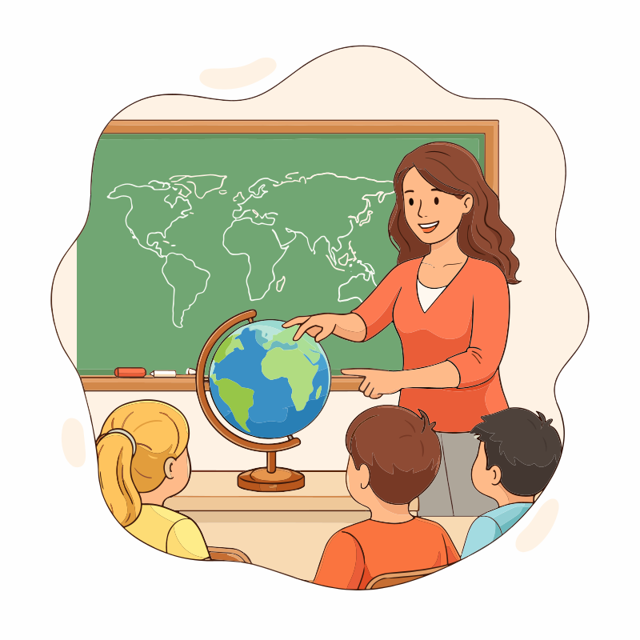
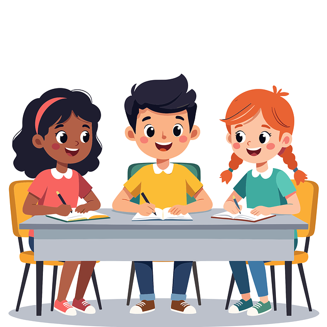
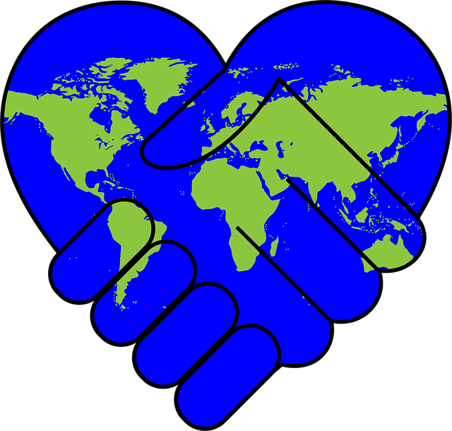
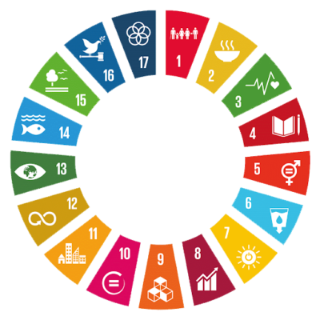

Sou voluntário
Escolha a matéria que domina e ensine alguns estudantes da sua comunidade.
Educa+
“Educação não transforma o mundo. Educação muda as pessoas. Pessoas transformam o mundo.”Paulo Freire
O Educa+ conecta jovens voluntários a estudantes da comunidade que precisam de reforço escolar gratuito.
Saiba +

Escolha a matéria que domina e ensine alguns estudantes da sua comunidade.
Peça ajuda nas matérias em que tem dificuldade, sem pagar nada.

Cada aula ajuda a diminuir a desigualdade no acesso à educação.

O objetivo é assegurar educação inclusiva e equitativa e promover oportunidades de aprendizagem para todos. Saiba mais no site da ONU Brasil.